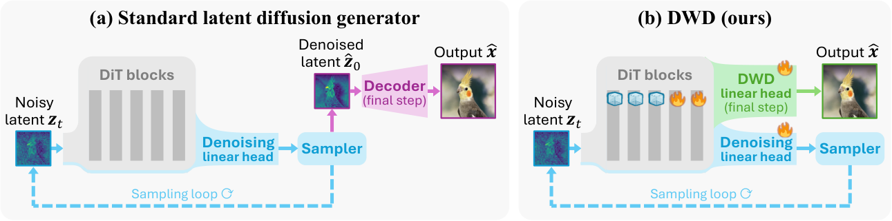
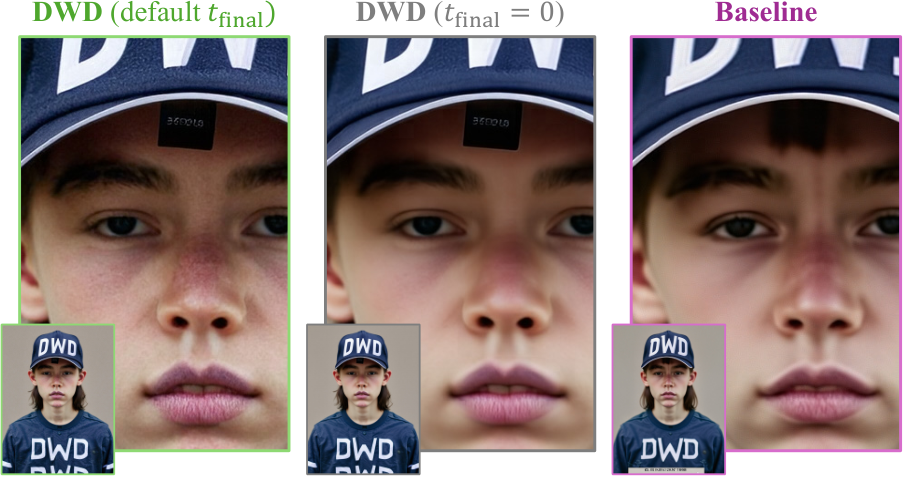
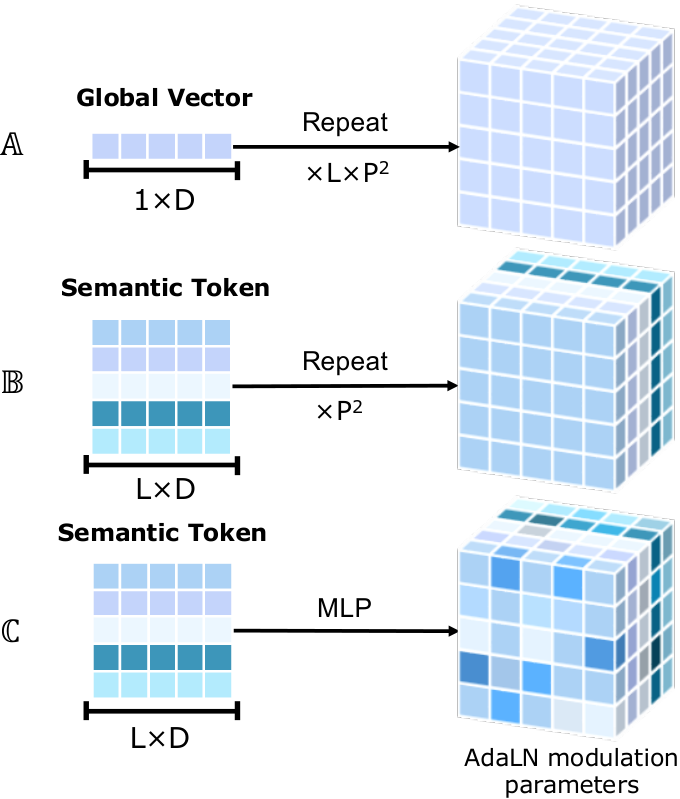
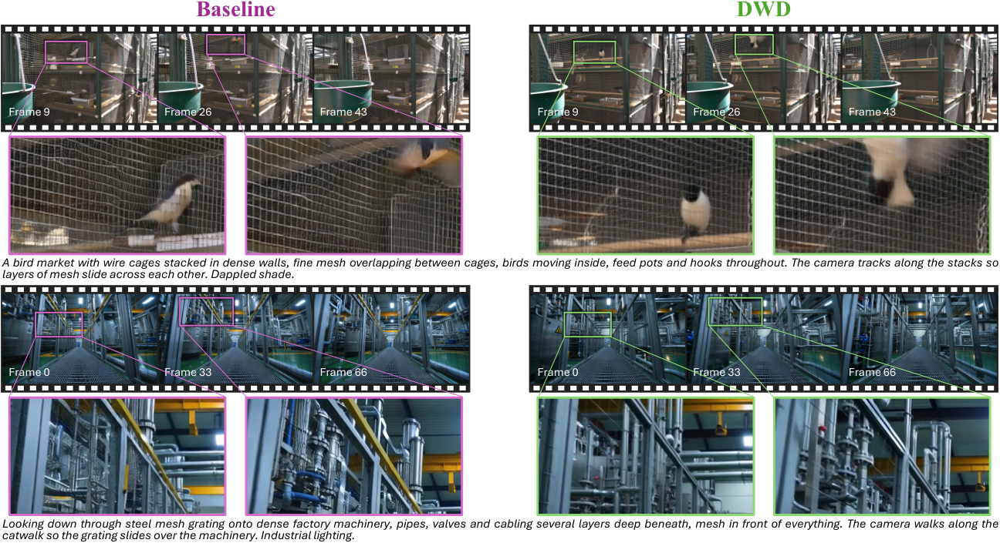
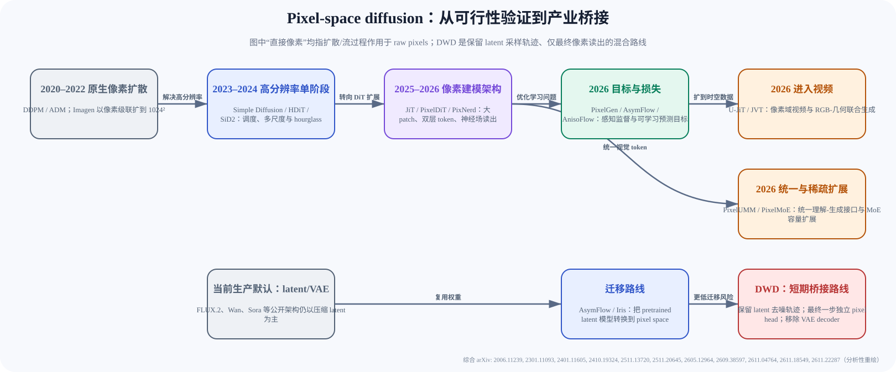
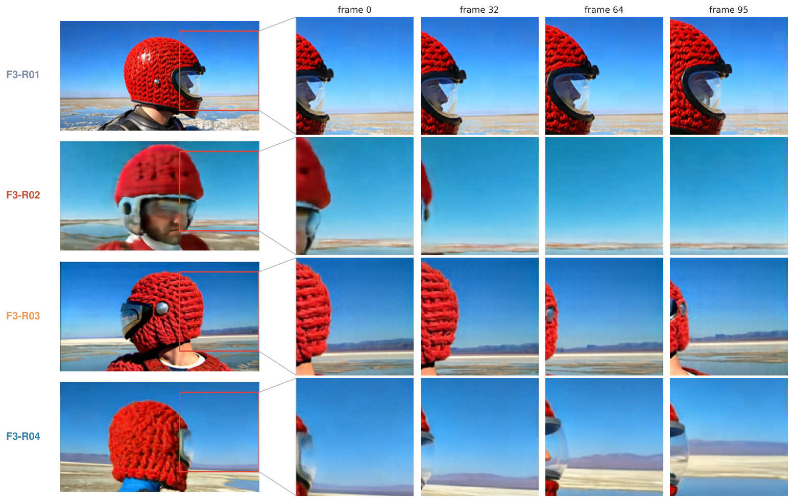

核心结论
方法脉络
关键证据
1. 先对齐概念：DWD 不是“纯 pixel diffusion”
DWD 的论文标题强调 direct pixel prediction，但其主路线仍在 latent space 内完成采样；它移除的是最后的 VAE decoder，而不是 latent trajectory。
标准 latent diffusion 的路径是 noisy latent → DiT denoising → denoised latent → VAE decoder → pixels。DWD 在同一组末层 tokens 上增加一个并行线性头：原 denoising head 继续完成所有采样步骤，DWD head 只在最终一步输出像素。训练时通常只更新最后 4–8 个 Transformer blocks、两个输出头和末端 modulation，冻结前缀，并用 frozen teacher 锚定原采样轨迹。
因此 DWD 应归入 latent sampling + direct pixel readout 的混合路线。论文也把双头结构接到真正的 pixel diffusion（AnisoFlow）上，但那部分的意义不同：不是移除 decoder，而是把“去噪目标”和“最终像素质量目标”分开。
| 路线 | 扩散/流发生在哪里 | 最终像素如何得到 | 代表工作 |
|---|---|---|---|
| Latent diffusion | 压缩 latent | VAE/AE decoder | LDM、FLUX、Wan、Sora |
| 纯 pixel-space diffusion | raw pixels / pixel patches | denoising output 或独立 pixel head | DDPM、HDiT、JiT、PixelDiT、JVT |
| Latent→pixel 转换 | 把 pretrained latent model 改成 pixel-space denoiser | pixel denoising output | AsymFlow、L2P、Iris conversion |
| DWD 混合路线 | 仍在 latent 中采样 | 最后一步从 DiT tokens 直接线性读出 pixels | 本文 DWD |

2. 为什么回到 pixel space：结构性优势与真实代价
Pixel-space 的吸引力不是“像素更原生”这句口号，而是去掉了固定 tokenizer/autoencoder 对信息、目标函数和系统边界的约束；代价则是把压缩难题重新交给主干网络。
- 避免重建上限与 decoder artifacts。 VAE 丢掉的纹理、文字、细线或时序细节，后续生成模型无法恢复；DWD、PixelDiT、SiD2、PixNerd 都把这一点作为核心动机。
- 端到端目标一致。 latent 路线先以重建/感知/对抗目标训练 autoencoder，再以生成目标训练 DiT；pixel 路线可直接优化生成分布，避免 representation learning 与 generation objective 的错配。
- 系统更少组件。 不再单独训练、部署和量化 VAE；在 few-step 模型中，固定 decoder 成本占比尤其高，DWD 的 4-step Wan 实验正体现这一点。
- 统一 dense 与 multimodal 接口。 RGB、depth、disparity 等像素对齐信号可以共享同一时空网格；PixelUMM 进一步尝试用 raw-pixel patches 同时支持理解和生成。
- 更少领域专用 tokenizer 假设。 JiT 明确把 raw natural data 视为可迁移到科学数据等缺少成熟 tokenizer 的方向。
一个反直觉点
| 优势 | 对应代价/风险 | 2025–2026 的主要解法 |
|---|---|---|
| 无 VAE 信息瓶颈 | raw pixel 维度高、token 多、训练/采样贵 | 大 patch、hourglass、多分辨率、Pixel-Space Hierarchical Flow |
| 端到端生成 | 高频噪声和低频语义相互干扰 | DeCo 频率解耦、PixelDiT 双层 token、PixNerd 神经场 |
| 直接优化像素质量 | L2/flow conditional mean 容易过平滑；感知损失又可能伤害覆盖率 | PixelGen noise-gating；DWD 独立 head；AnisoFlow 可学习 target |
| 统一视觉接口 | patch seam、长上下文与视频维度放大 | 卷积/PixelShuffle head、tubelet、MoT/MoE、U-JiT 多尺度 |
| 移除 decoder | 强 decoder 上收益可能很小；线性头未必适合更大 patch | DWD-conv、迁移式 finetune；保留模型特定 fallback |


3. DWD 真正解决了什么：双头解耦，而非简单删掉 decoder
作者最有价值的发现是：denoising prediction 与 final pixel prediction 是两个不同任务；让一个 head 同时承担它们，会在可学习性、样本覆盖与感知细节之间冲突。
DWD 的 pixel head 用 L1、LPIPS 和可选 adversarial loss，在小噪声区间训练；denoising head 则在更宽 timestep 区间匹配 frozen reference model 的 velocity，以保持已有语义、构图和采样轨迹。共享一个 head 的 ImageNet 消融没有带来收益：AnisoFlow baseline FID 1.55，双头 DWD 为 1.43，而 w/o separate head 恶化到 1.71。
论文还做了 decoder-retaining control：在同一视频数据、相同 pixel losses 下 finetune Wan decoder，warping error 只从 1.52 降到 1.39；DWD 降到 1.18。它支持“收益不只是多看了训练数据”，但仍不能证明所有 VAE 或所有视频分布都会有相同收益。
在强 decoder 的 FLUX.2 klein 上，DWD 与 baseline 基本打平，论文也承认收益会缩小；在 decoder 占比更高的 few-step Wan 上，系统价值更明显。因此 DWD 的商业价值更像 按 decoder 成本与伪影严重程度择机替换，而不是一刀切重构所有生成栈。
| 设置 | Baseline | DWD | 解释 |
|---|---|---|---|
| AnisoFlow ImageNet 256 FID | 1.55 | 1.43 | 独立 final-pixel head 改善低层细节；共享 head 为 1.71 |
| Wan2.1 14B warping error | 1.52 | 1.18 | 约 -23%；其他高层/语义指标大体持平 |
| Wan2.1 14B 8-bit warping error | 1.69 | 1.20 | 约 -29%；DWD 对量化更稳健 |
| 4-step FLUX.2 9B latency / VRAM | 0.776s / 37.31GB | 0.695s / 35.54GB | 1.12×，显存约 -5% |
| 4-step Wan1.3B latency / VRAM | 4.661s / 19.22GB | 2.757s / 16.15GB | 1.69×，显存约 -16% |

4. Pixel-space diffusion 的工作谱系：严格口径与相邻路线
这条路线并非 2026 才出现；真正的新变化，是 pixel DiT 开始获得 latent DiT 类似的可扩展训练配方，并从图像延伸到视频、MoE 和统一多模态模型。
| 时间 | 工作 | 口径 | 核心贡献/结果 | 机构信号 |
|---|---|---|---|---|
| 2020 | DDPM | 严格：raw-pixel diffusion | 建立现代像素域扩散基线；CIFAR-10 FID 3.17 | UC Berkeley |
| 2021 | ADM / Diffusion Models Beat GANs | 严格 | 像素 U-Net + classifier guidance，ImageNet 质量超越当时 GAN | OpenAI |
| 2022 | Imagen | 宽松：像素级联 | 64→256→1024 的 cascaded pixel diffusion；不是单阶段 | Google Research |
| 2023 | Simple Diffusion | 严格：单阶段 | 通过分辨率相关 noise schedule、局部扩容和下采样实现高分辨率 end-to-end | Google Research |
| 2024–25 | HDiT / SiD2 | 严格 | hourglass 让 attention 对像素数近线性；SiD2 报告 ImageNet512 FID 1.5 | Stability AI / Google DeepMind |
| 2025–26 | JiT | 严格 | 主张 clean-data prediction 更适合高维 manifold；16/32 大 patch 的 plain Transformer | MIT |
| 2025–26 | PixNerd | 严格但含 neural-field readout | 单阶段、大 patch + neural field；ImageNet256 FID 2.15 | NJU / ByteDance Seed |
| 2025–26 | PixelDiT | 严格 | patch-level DiT + pixel-level DiT；ImageNet256 FID 1.61，1024² T2I GenEval 0.74 | NVIDIA / Rochester |
| 2026 | DeCo | 相邻：pixel diffusion + 轻量 pixel decoder | 低频语义与高频细节分工；ImageNet256 FID 1.62 | PKU / NJU / Huawei |
| 2026 | PixelGen | 严格 | LPIPS + P-DINO 感知监督与 noise gating；GenEval 0.79 | PKU |
| 2026 | AsymFlow / AnisoFlow | 严格 + 可迁移 | 重写/学习 prediction target；ImageNet FID 1.57/1.55，并支持 latent→pixel | Stanford |
| 2026 | PixelMoE | 严格 | LLM-style sparse MoE + hierarchical flow，探索容量扩展 | USTC / KlingAI |
| 2026 | PixelUMM | 严格：统一模型 | 无 VAE/vision encoder 的图像视频理解-生成接口 | NVIDIA / Waterloo |
| 2026 | Iris-3B | 严格 + conversion | 3B、1024²；生成可竞争，但 depth/restoration 未显著优于 latent | SperidLabs |
| 2026 | U-JiT / JVT | 严格：视频 | 多尺度或 plain DiT 式 pixel video；JVT 演示 RGB-disparity 联合生成 | Meta FAIR / Shanghai AI Lab |
| 2026 | DWD | 混合 | latent 采样 + 最终 direct pixel head；降低 decoder 成本和视频伪影 | Stanford / Luma AI |

5. 学界与工业界趋势判断（截至 2026-11-24）
结论不是“latent 将被 pixel 立即替代”，而是：pixel space 已成为一级研究方向；工业界正在做技术储备和开源验证，真正的生产迁移更可能先从混合方案与特定任务发生。
学界：明确上升趋势。 早期像素扩散以 U-Net 和级联为主；2025–2026 的增量集中在 Transformer 扩展性、clean-data/anisotropic target、感知目标、MoE、video 与 unified multimodal。这说明问题定义已经从“VAE 是否可删”转成“怎样在不依赖独立 VAE 的前提下得到更好的计算压缩和学习目标”。
工业研究：方向成立，产品转向尚无充分证据。 多家企业研究团队同时发论文，说明这是实质性的技术储备；但论文作者 affiliation、开源 checkpoint 与产品部署是三层不同证据。当前公开的高分辨率图像/视频产品仍普遍通过 latent 压缩控制 token 数、显存和延迟。
近期：DWD 类 hybrid 最有落地相。 它复用已有 latent DiT 的语义和采样轨迹，不要求从零预训练 full pixel model，只 finetune 末端 blocks，并直接瞄准 few-step video 中 decoder 成本占比过高的问题。代价是每个 base model 仍需专门训练和验证，且强 decoder 上收益有限。
中长期：pixel-first 最可能先在两类场景胜出。 一类是细纹理、文字、几何或多通道对齐很重要的生成/编辑；另一类是理解与生成要共用视觉接口的统一模型。全分辨率长视频是否全面转向 pixel，则取决于 token/attention 成本、数据规模和端到端吞吐能否跨过 latent 的系统优势。
我对路线的排序
| 维度 | 公开证据 | 趋势判断 | 置信度 |
|---|---|---|---|
| 学术热度 | 2025–2026 出现 JiT、PixelDiT、DeCo、PixelGen、AsymFlow、AnisoFlow、PixelMoE、U-JiT、JVT、PixelUMM 等多条独立路线 | 已从小众复古路线升级为视觉生成主前沿之一 | 高 |
| 工业研究投入 | NVIDIA、Google DeepMind、Meta FAIR、ByteDance Seed、Huawei、KlingAI、Luma AI、Stability AI 等作者/机构参与 | 企业研究部门在同时押注图像、视频、统一模型与迁移方案 | 高（研究投入）；中（产品意图） |
| 主流生产架构 | FLUX.2 官方仍称 latent flow matching；Wan 使用 3D causal VAE；Sora 公开为压缩 spacetime patches | 公开产品栈尚未发生 pixel-first 反转 | 高 |
| 图像质量 | PixelDiT、SiD2、AsymFlow/AnisoFlow 在 ImageNet/T2I benchmark 已接近或达到强基线 | pixel image model 已跨过“完全不可竞争”阶段 | 中高；跨数据/算力公平性仍有限 |
| 视频可行性 | U-JiT、JVT 在 2026 开始给出 controlled benchmark；DWD 在 Wan 上给出 decoder-free 结果 | full-pixel video 进入早期验证，短期更现实的是 latent sampling + direct readout | 中 |
| 下游 dense task | Iris-3B 在 depth/restoration 未见显著 pixel prior 优势 | “保留像素细节必然利好所有 dense task”目前不成立 | 高（负结果本身）；低（长期结论） |
| 多模态统一 | PixelUMM 用单一 raw-pixel 接口做图像/视频理解与生成；JVT 联合 RGB-disparity | 这是 pixel space 最具战略性的长期价值之一 | 中 |
| 近期落地形态 | DWD、AsymFlow conversion、Iris conversion 都强调复用 pretrained latent 模型 | 未来 12–24 个月更可能先出现桥接式迁移，而非从零训练全栈纯 pixel 产品 | 中（分析性预测） |

6. 对 DWD 的总体评价
DWD 是一篇工程价值大于概念噱头的工作：它没有证明 latent diffusion 已过时，却给出了移除 decoder、保留 pretrained trajectory 的低风险路径，并把 final-pixel objective 独立出来。
- 最强贡献： 双头角色分离以及 shared-head 失败消融，指出 pixel quality loss 不应直接污染 denoising trajectory。
- 最强落地证据： 4-step Wan 的 1.69× 端到端加速与 16% 显存下降；few-step 模型越快，固定 decoder 越值得移除。
- 最强质量证据： 视频 warping error、8-bit robustness 和相同 seed 的细节稳定性；比单纯 FID 更贴近 decoder artifacts。
- 最大限制： 仍需逐 base model finetune；Wan14B 训练成本约 4300 H100 GPU-hours；线性头对超过 16×16 patch 是否够用未证明；强 decoder 上收益缩小。
- 最重要的行业含义： 不必在“纯 latent”与“纯 pixel”之间二选一。采样空间、最终表示、训练目标和输出头可以分别选择，未来系统很可能沿这一模块化方向演进。
一句话判断
局限与开放问题
- DWD 的主要实验来自作者团队，没有独立复现或线上产品 A/B；定性图也存在样例选择偏差。
- ImageNet FID、GenEval、VBench 与 warping error 不能等价为真实用户偏好、端到端服务成本或商业质量。
- 不同论文的数据、模型规模、训练算力、采样步数和评测协议差异很大；本文不把横跨论文的绝对指标当成严格排行榜。
- 纯 pixel 模型的 1024² 图像和低分辨率/短视频结果正在增加，但长视频、高帧率、复杂编辑与大规模 serving 证据仍明显少于 latent 模型。
- PixelUMM、JVT、Iris 等工作非常新，后续版本、代码完整性和独立复现可能改变判断。
- Iris-3B 的 dense-task 负结果有其 own-paper confounds，不能外推为 pixel representations 对所有下游任务无益。
证据与推断边界
- “DWD 是 latent sampling + direct pixel readout”是由本文方法图与训练目标直接支持的事实；“它比纯 pixel 更易产业落地”是基于迁移成本的分析。
- “工业研究升温”由企业研究团队的公开论文、项目页和开源权重支持；这不代表对应公司已经把技术部署到商业产品。
- “公开生产栈仍以 latent 为主”只覆盖有公开技术资料的代表模型；闭源系统可能采用未披露架构。
- 对未来 12–24 个月的路线排序属于趋势推断，不是论文作者或公司的公开 roadmap。
- 论文作者明确承认：FLUX.2 decoder 已较强时 DWD 质量收益缩小；超过 16×16 pixel patch 时线性头是否足够尚未证明。
来源与版本
调研截止 2026-11-24（Asia/Shanghai）。论文版本、项目页、机构 affiliation 与产品公开资料均可能继续变化；趋势判断严格区分公开证据与分析性推断。
- DWD paper — 主论文，v2 2026-11-18
- DWD project page — 作者、视频对比与项目资料
- pi-H3: 2–4 step video without a VAE decoder — DWD 的相邻 few-step video 实践信号
- DDPM — 现代 raw-pixel diffusion 基础
- Diffusion Models Beat GANs — OpenAI ADM 像素域 ImageNet
- Imagen — 像素级联 64→256→1024
- Simple Diffusion — 高分辨率单阶段 pixel diffusion
- HDiT — 高分辨率 hourglass pixel transformer
- SiD2 — ImageNet512 pixel-space scaling recipe
- PixNerd — large patch + neural field readout
- JiT / Back to Basics — clean-data prediction 与 large-patch pixel Transformer
- DeCo — frequency-decoupled pixel diffusion
- PixelDiT — dual-level pixel diffusion transformer
- PixelGen — perceptual supervision + noise gating
- AsymFlow — rank-asymmetric target 与 latent→pixel finetuning
- Pixel-Space Diffusion Transformers — 2026 pixel DiT survey/analysis
- PixelUMM — 无 encoder 的图像/视频理解生成统一
- Iris-3B — 3B pixel T2I、conversion 与 downstream 负结果
- PixelMoE — LLM-style MoE + hierarchical pixel flow
- U-JiT — 多尺度 pixel-space video
- AnisoFlow — 可学习各向异性 prediction target
- JVT — plain DiT-style pixel video 与 RGB-disparity
- FLUX.2 official architecture note — 公开说明仍为 latent flow matching
- Wan technical report — 3D causal VAE + latent video DiT
- OpenAI Sora technical overview — compressed spacetime patches 的公开架构描述